Stiftelsen WE
WE kobler kvinner utenfor arbeidslivet med nye muligheter. En visuell identitet utviklet for å balansere profesjonalitet og varme i møte med to ulike målgrupper.
01
Design
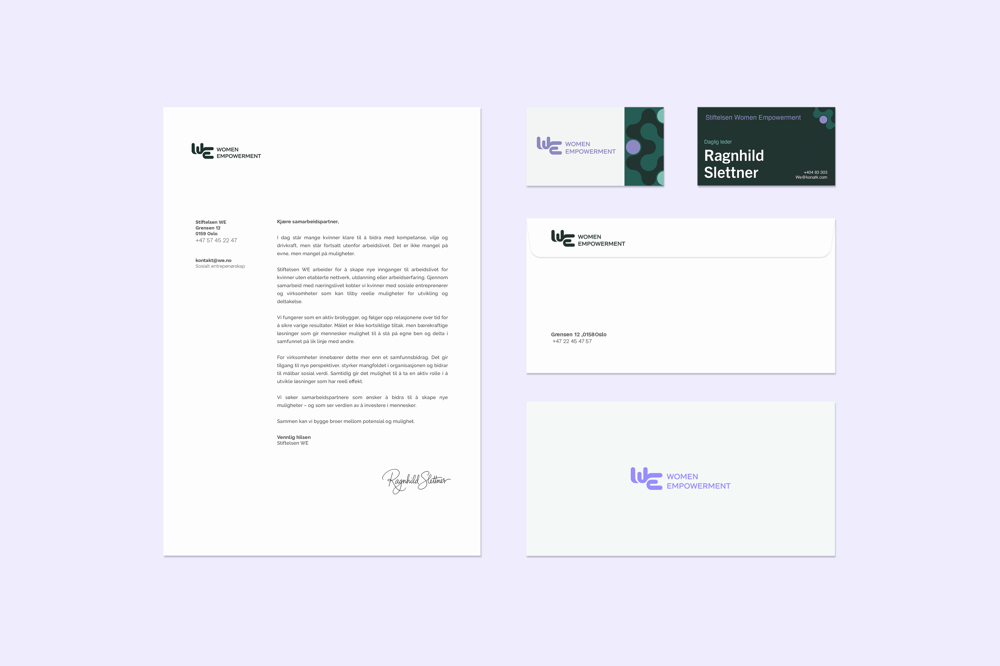


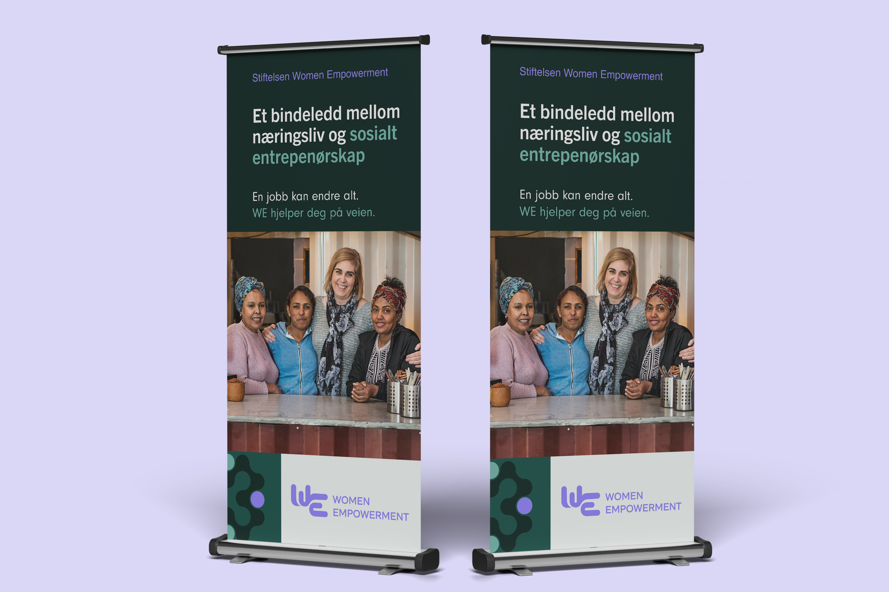
02
Konsept & oppdragsgiver
Stiftelsen WE (Women Empowerment) er etablert for å skape innganger til arbeidslivet for kvinner uten utdanning, erfaring eller nettverk.
Identiteten bygger på en balanse mellom struktur og menneskelighet. Målet var å utvikle et uttrykk som fungerer i en profesjonell B2B-kontekst, og samtidig oppleves inkluderende og relevant for målgruppen.
Identiteten er utviklet for å bygge tillit — ikke bare oppmerksomhet.
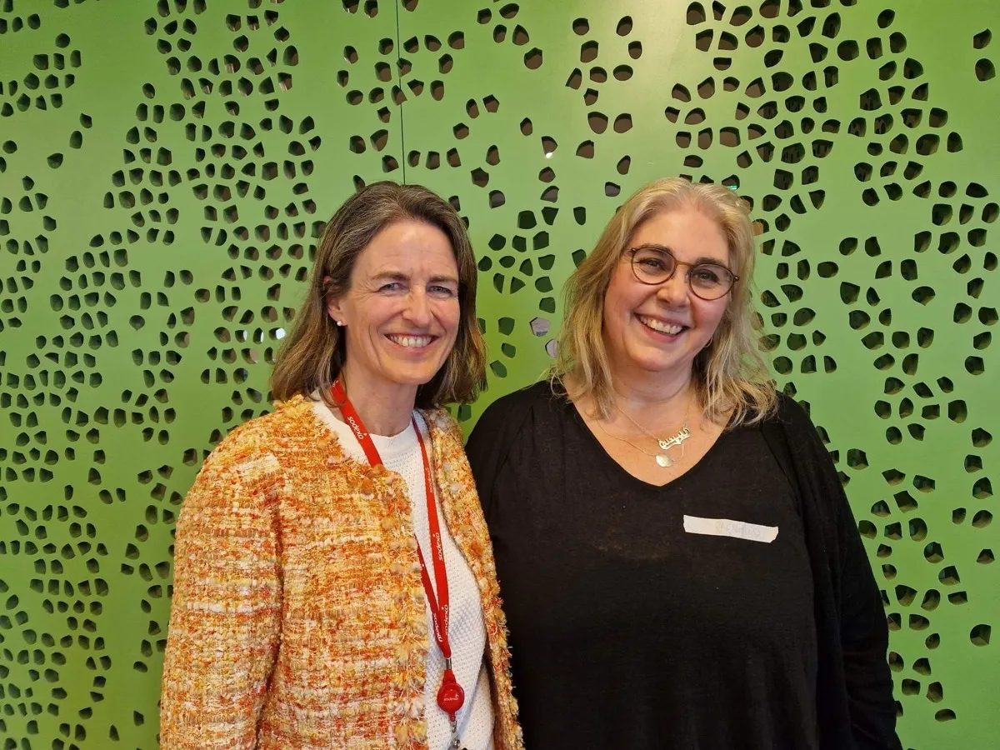
Kirstine Holst (til venstre) og Ragnhild Slettner (til høyre)03
Målgruppe
Kvinner uten nettverk
Kvinner uten utdanning, erfaring eller nettverk. Identiteten må oppleves trygg og inkluderende — uten å virke veldedig eller stigmatiserende.
Næringslivsaktører
Virksomheter og samarbeidspartnere WE ønsker å engasjere. Overfor dem må identiteten signalisere profesjonalitet, struktur og troverdighet.
WE henvender seg til to målgrupper med ulike behov. For målgruppen må identiteten oppleves trygg og inkluderende. For næringslivet må den signalisere profesjonalitet, struktur og troverdighet.
«Hvem skal føle seg trygge når de ser dette?»
— Cecilie Melli, designer · ekspertintervju ·
04
Fargesystem
Paletten balanserer forankring og energi. Dype grønntoner skaper en identitet knyttet til natur, tillit og bærekraft, og skiller WE fra konkurrentenes blådominerte uttrykk. Violett fungerer som en kontrasterende aksentfarge som tilfører energi og understreker det innovative ved arbeidet.
05
Typografi
ABCDEFGHIJKLMN
OPQRSTUVWXYZÆØÅ
abcdefghijklmnop
qrstuvwxyzæøå
Tittel
Trade Gothic Bold
Tittel
Trade Gothic Bold Trade Gothic Regular
Brødtekst
Helvetica RegularHelvetica Oblique
06
Logo
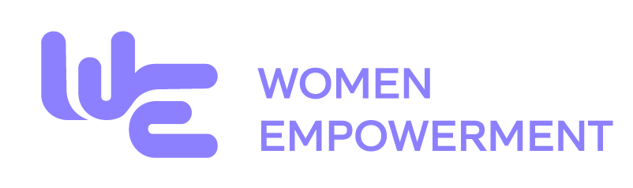
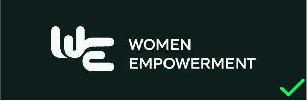
Grønn på lilla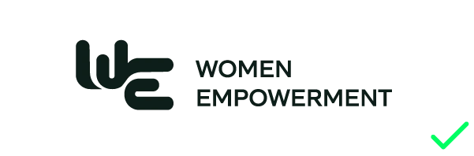
Lilla på lilla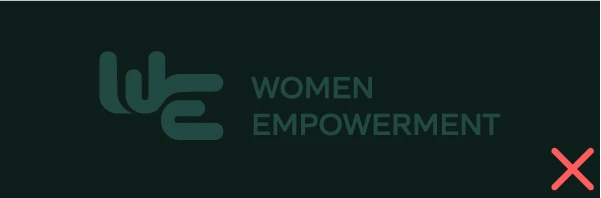
Lilla på grønn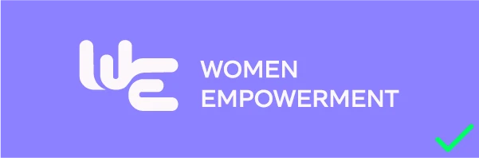
Hvit på lilla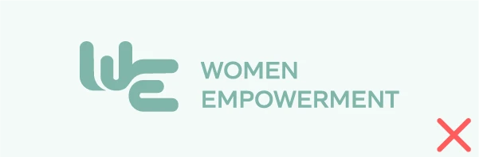
Monokrom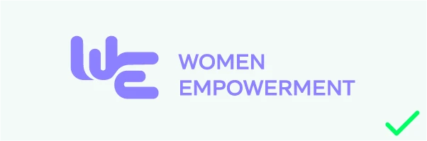
Hvit på grønn07
Visuelt system
Mønster
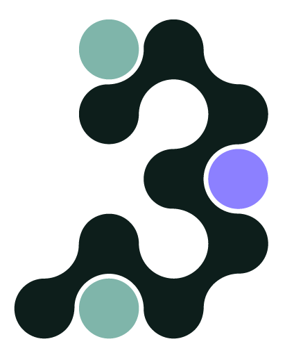
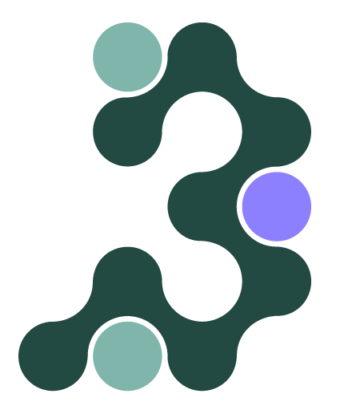
Nettverksmønsteret er en metafor for WEs kjerne: sammenkoblingen mellom kvinner, næringsliv og sosiale entreprenører. Variasjonen i formene speiler mangfoldet av bakgrunner, mens nodene markerer mulighetene som løftes frem. Det visuelle uttrykket balanserer et mykt, menneskelig fokus med profesjonaliteten som kreves i næringslivet.
Bildebruk
Bildestilen prioriterer autentiske situasjoner med kvinner i fokus for å sikre gjenkjennelse hos målgruppen. Konsistent lys og fargebruk er avgjørende for å skape en helhetlig visuell identitet på alle flater.
Bilder hentet fra Adobe Stock
10
Krediter
Gruppe
- Josefine Reichelt Gjertsen
- Tia Linnea Dahl
Veileder
- Vera Pahle
Oppdragsgiver
- Stiftelsen WE — Women Empowerment
- Ragnhild Slettner (kontaktperson)
Bilder
- Fotografier — Adobe Stock eller hentet fra nettsider der stiftelsen WE har gitt tillatelse til bruk
- Mockups — Envato.com
Verktøy
- Adobe Illustrator
- Adobe Photoshop
- Figma
Emne
- IDG2015 — Strategisk design
- NTNU, 2024